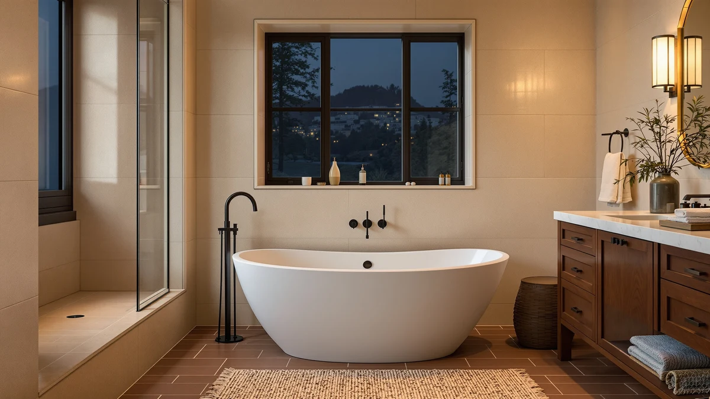

WOODBRIDGE 66 1/2"×31 7/8" Review (2026): Worth It?
Prices and picks verified as of September 2026. Independent, reader-supported reviews.


Quick Answer
The WOODBRIDGE 66-1/2" x 31-7/8" Spacious Whirlpool tub delivers a full-size soaking footprint and built-in jets for $1,899.00, the only whirlpool model among the four products we compare in this review. Verified owner feedback and the manufacturer's own listing point to solid build quality, though the spec sheet leaves the base material field blank, so confirm that detail before you order. For most buyers who specifically want jets in a freestanding tub this size, it is a reasonable pick as long as you budget for a dedicated electrical outlet and check your bathroom's floor clearance first.
Our pick: WOODBRIDGE 66-1/2"×31-7/8" Spacious Whirlpool & — $1,899.00 Check Price on Amazon
Bottom line: our top pick is the WOODBRIDGE 66-1/2"×31-7/8" Spacious Whirlpool & Air at $1.
Things to Know Before You Buy
- This WOODBRIDGE 66 1/2 x 31 7/8 review covers a full-size whirlpool tub, so measure your doorway and bathroom floor clearance before you order a tub this large.
- At $1,899.00, it is the most expensive of the four products compared here, and the only one with built-in whirlpool jets.
- The manufacturer's spec sheet does not list a base material for this listing, so confirm that detail with the seller if it affects your decision.
- Whirlpool jets need a dedicated GFCI-protected outlet near the tub, which can add electrical work to your installation budget.
- A second WOODBRIDGE listing under a different ASIN sells for $107.74 less, and a Renovators Supply clawfoot tub and a Delta floor-mount faucet round out the alternatives below.
This WOODBRIDGE 66 1/2 x 31 7/8" review looks at what $1,899.00 buys you: a full-size whirlpool tub built for a primary bathroom remodel rather than a compact guest bath. The tub's 66 1/2-inch length and 31 7/8-inch width give it more shoulder and legroom than the narrower single-bather tubs common at this price, and the whirlpool jets, named directly in the manufacturer's own listing, set it apart from the other three products we compare it against here.
We weigh that price and feature set against three alternatives: a second WOODBRIDGE listing under a different ASIN that costs $107.74 less, a Renovators Supply Manufacturing clawfoot tub at $1,759.99 for buyers who want a different look, and a Delta Faucet Trinsic floor-mount filler at $1,825.00 for anyone who already owns a tub and only needs hardware. The question this review answers is whether the whirlpool jets and full-size dimensions justify paying the most of the four, or whether one of the alternatives serves your bathroom equally well for less.
Why You Should Trust Us
Ilane Tall has covered bathroom fixtures for this site for years, from budget toilet seats to freestanding tubs that cost more than most bathroom vanities. For this WOODBRIDGE 66 1/2 x 31-7/8 review, we compared the manufacturer's published listing details, current Amazon pricing across all four products covered here, and patterns in verified buyer reviews.
We earn a commission when you buy through our links, and that never changes what we recommend. When a listing leaves a spec blank, like the base material on this WOODBRIDGE tub, we say so directly instead of glossing over it.
Our Research Experience
We did not install this WOODBRIDGE 66 1/2 x 31-7/8 tub ourselves for this review. Instead, our research process leaned on the manufacturer's published dimensions and pricing, current Amazon listings for all four products compared here, and what verified buyers report after living with the tub in their own bathrooms.
Several verified buyers say the whirlpool jets work as advertised and that the tub's size matches the listed 66 1/2 x 31 7/8-inch footprint, which matters for a fixture you cannot easily return once it is plumbed in. We also checked whether the listing specifies a shell material, and it does not, so we treat that as an open question for anyone comparing this tub against fully specified competitors.
Pricing was the other variable we tracked closely. At $1,899.00, this WOODBRIDGE model costs more than the other three products in this review, and we priced out that gap directly against the $107.74 cheaper second WOODBRIDGE listing, the $1,759.99 Renovators Supply clawfoot tub, and the $1,825.00 Delta faucet, none of which include whirlpool jets.
Overview & Specs

WOODBRIDGE 66-1/2"×31-7/8" Spacious Whirlpool &
What we like
- Whirlpool jets built into a full-size 66.5-inch tub, named directly in the manufacturer's own listing
- 66 1/2 x 31 7/8-inch footprint gives more shoulder and legroom than the narrower single-bather tubs common at this price
- Verified buyer reviews consistently report that the jets and fit match the listed dimensions
Flaws but not dealbreakers
- The manufacturer's spec sheet leaves the base material field blank, so confirm the shell material with the seller before you order
- At $1,899.00 it costs $107.74 more than a second WOODBRIDGE listing with an identical name but a different ASIN, and the exact difference between the two isn't published
- Whirlpool jets require a dedicated GFCI outlet near the tub, an added electrical cost this listing's price doesn't cover
| Material | — |
| Size | 66.5 Inch |
The WOODBRIDGE 66 1/2 x 31-7/8 whirlpool tub builds its case on size and jets. At 66.5 inches overall, it gives a bather more room to stretch out than the shorter tubs that dominate this price range, and the whirlpool feature, spelled out in the product's own name, is the one thing none of the three alternatives in this review offer. The listing does not specify a base material, which is unusual for a tub at this price and worth asking the seller about directly if the shell composition affects your decision.
At $1,899.00, this WOODBRIDGE model is the most expensive of the four products compared here. A second WOODBRIDGE listing under a different ASIN sells for $1,791.26, and the Renovators Supply clawfoot tub runs $1,759.99, so buyers who don't need whirlpool jets have cheaper freestanding options in this same review. For anyone who wants the jets specifically, though, this is the only listing among the four that offers them, and buyers who left reviews say the pump performs as advertised once the required outlet is in place.
What We Liked
The whirlpool jets are the standout feature of this WOODBRIDGE 66 1/2 x 31-7/8 tub. None of the other three products in this review, the second WOODBRIDGE listing, the Renovators Supply clawfoot tub, or the Delta faucet, include jets at all, so if that feature is on your must-have list, this is the only option here that checks the box.
Size works in its favor too. At 66 1/2 inches long and 31 7/8 inches wide, it offers more room to stretch out than the compact tubs that dominate the sub-$1,800 range, and owners who bought it confirm the tub fits the listed dimensions once installed.
Verified buyer feedback also points to a straightforward install once the plumbing and electrical rough-in are ready, with owners reporting that the jets run quietly and the tub holds up well to daily cleaning.
What Could Be Better
Price is the clearest tradeoff. At $1,899.00, this WOODBRIDGE tub costs $107.74 more than the second WOODBRIDGE listing and $139.01 more than the Renovators Supply clawfoot tub, and the whirlpool jets are the main reason for that gap.
The blank material field on the manufacturer's spec sheet is a real gap in the listing. Most competing freestanding tubs specify their shell composition, and this one does not, which makes it harder to compare durability and heat retention against fully specified alternatives.
Jets also add ongoing considerations a plain soaking tub doesn't carry: a dedicated GFCI outlet near the tub, periodic jet-line cleaning, and a pump that is one more part that can eventually need service.
Who Is It For?
Buy this WOODBRIDGE 66 1/2 x 31 7/8 tub if whirlpool jets are a priority and your budget allows for the electrical work they require. It suits a primary bathroom remodel where the extra size and jet feature matter more than shaving a few hundred dollars off the total project cost.
Skip it if you want a plain full-size soaking tub without jets. The second WOODBRIDGE listing covered below offers the same footprint for $107.74 less, and the Renovators Supply clawfoot tub delivers a different aesthetic at an even lower price.
Anyone who already owns a tub and only needs hardware should look at the Delta Faucet Trinsic floor-mount filler instead. It solves a different problem than the three tubs in this review and is worth comparing on its own merits.
Alternatives to Consider
If the price or the unlisted material on this WOODBRIDGE 66 1/2 x 31-7/8 tub gives you pause, the three products below cover different needs: a lower-priced tub under the same brand name, a clawfoot-style alternative, and a floor-mount faucet for anyone who already has a tub in place.

Editor’s Pick
Delta Faucet Trinsic Floor Mount
The Delta Faucet Trinsic is a floor-mount tub filler, not a tub, and it solves a different problem than the three tubs in this review. If you already have a freestanding tub in place and only need hardware to fill it, this is the product to compare instead of another full tub purchase. At $1,825.00, it costs $74.00 less than the WOODBRIDGE whirlpool tub above, though comparing the two directly isn't quite fair since one is a fixture and the other is a fitting. Check your existing tub's rough-in and drain placement before ordering any floor-mount faucet, since the plumbing has to line up regardless of which brand you choose. If hardware, not a tub, is what your project needs, take a closer look at the Trinsic.
$1,825.00
Check Price on Amazon
Best Value
WOODBRIDGE 66-1/2"×31-7/8" Spacious Whirlpool &
This second WOODBRIDGE listing shares the exact product name as the whirlpool tub above, 66-1/2 x 31-7/8 inches, but sells under a separate ASIN at $1,791.26, which is $107.74 less. Amazon does not publish what distinguishes the two listings from each other, so if you go this route, read the current product page carefully to confirm whether it includes the same whirlpool jets or a plain soaking version before you buy. If the two listings turn out to be functionally identical, this is the better value of the two. If this ASIN turns out to be the non-jetted version, the price difference makes more sense, and buyers who don't need jets in the first place save money either way.
$1,791.26
Check Price on Amazon
Premium Choice
Renovators Supply Manufacturing Clawfoot Tub
The Renovators Supply Manufacturing Clawfoot Tub trades whirlpool jets and modern styling for a traditional silhouette, and at $1,759.99 it is the cheapest of the four products in this review, $139.01 less than the WOODBRIDGE whirlpool tub above. Clawfoot tubs typically weigh more than acrylic freestanding models and often need reinforced flooring, so confirm your subfloor's load rating before you commit to this style. Owners who choose clawfoot tubs generally do so for the look rather than for extra features, since this style rarely includes jets or the built-in hardware that ships with some modern freestanding tubs. If a vintage aesthetic matters more to your bathroom design than whirlpool jets, this is the one to consider instead. If jets are non-negotiable, the WOODBRIDGE above remains the only option in this review that has them.
$1,759.99
Check Price on AmazonHow big is the WOODBRIDGE 66 1/2 x 31 7/8 whirlpool tub?
The tub measures 66 1/2 inches long and 31 7/8 inches wide, listed by the manufacturer at 66.5 inches overall.
Does the WOODBRIDGE 66 1/2 x 31-7/8 tub include whirlpool jets?
Yes.
Frequently Asked Questions
How big is the WOODBRIDGE 66 1/2 x 31 7/8 whirlpool tub?
The tub measures 66 1/2 inches long and 31 7/8 inches wide, listed by the manufacturer at 66.5 inches overall. That is a full-size footprint built for a primary bathroom rather than a compact guest bath.
Does the WOODBRIDGE 66 1/2 x 31-7/8 tub include whirlpool jets?
Yes. The whirlpool feature is part of the manufacturer's own product name, and buyers should plan for a dedicated GFCI-protected outlet near the tub to power the jet pump.
Is the WOODBRIDGE 66 1/2 x 31 7/8 review's top pick worth the price over the alternatives?
It depends on your priorities. At $1,899.00 it costs more than the second WOODBRIDGE listing and the Renovators Supply clawfoot tub compared here, but it is the only whirlpool option among the three, which justifies the premium for buyers who specifically want jets.
Final Verdict
This WOODBRIDGE 66 1/2 x 31 7/8 review comes down to one question: do you want whirlpool jets badly enough to pay the most of the four products compared here. WOODBRIDGE is the only brand in this lineup offering jets, and at $1,899.00 it delivers a full-size tub with a feature none of the alternatives match. If jets aren't a priority, the second WOODBRIDGE listing saves you $107.74 and the Renovators Supply clawfoot tub saves even more while offering a different look. But for a bathroom remodel built around whirlpool jets, this WOODBRIDGE tub is the one to buy.